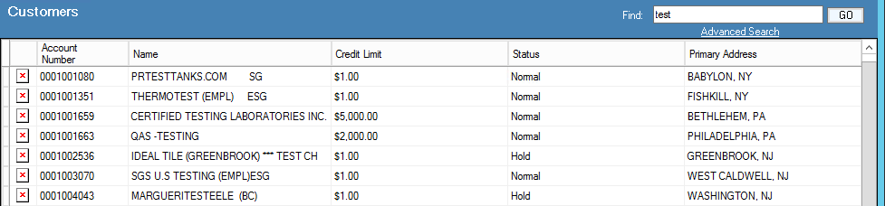
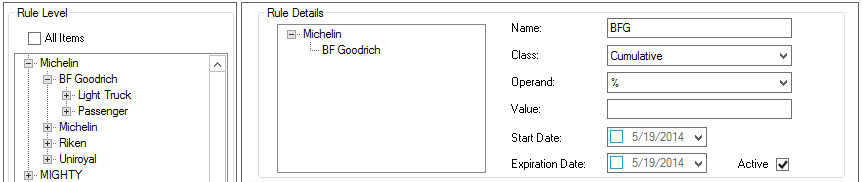
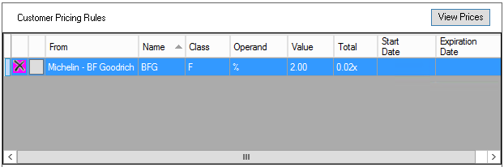
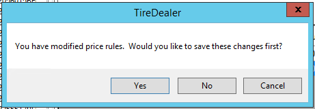
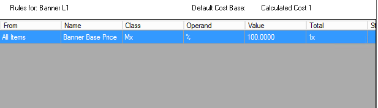
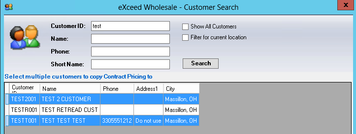

Customer (Contract) Pricing Setup
Allows additional flexibility to set pricing at the customer level in addition to the price level that has been assigned by default in the customer record or the default location price level.
Home Screen: FIND Customers – Enter customer name or number and select customer

- In customer record, select CUSTOMER PRICING tab
Note: Customer price rules can be set at any level of the inventory tree down to Sku level. When a branch is selected the rule, set pertains to that branch and all branches and Skus below. All items can also be selected as displayed below with the understanding that ALL items (including non-inventoried items) will have rule applied.
- Select branch you wish to set rule or go to bottom of inventory tree and search for a specific Sku to apply rule.
- Select
- Once you have made your selection for rule, it will display the tree structure as it pertains to your rule in Rule Details as displayed below.

- Populate: Rule Name: Name using tree branch or Sku rule was created for
Class: Cumulative – Chained rule
Additive – Works identically to cumulative rule
Fixed – Sets fixed price overriding price level rules
Margin Ceiling/Margin Floor
Round Nearest – Rounds to the nearest value assigned
Round Up – Rounds up to the nearest value assigned
Base Change Rule – Changes base factor to something other than default setting
Matrix – Pricing set based on range of price or range of units
Operand: Select %, G% or $ - (GP% selection formula = Base/(1.00-GP%)
Value: Enter Value based on above selection (Negative values are
allowed)
Start Date: Select drop down and choose start date
(remove date by unchecking box to left of date)
Exp. Date: Select drop down and choose expiration date
(remove date by unchecking box to left of date)
Active: Validate checked for active status
- Select:
- Rule will display under Customer Pricing Rules
- Select “X” to remove rule
- Select view prices to view customer pricing in inventory search screen to verify price is as desired


Note: Price level rules (created in inventory management) will display based on customer setup at address level.

Select:
- Allows ALL price rules created within Customer Pricing tab of customer record to be copied to another customer.
- Select
- Enter Customer ID or Name to search
- Check appropriate boxes to search all customers or current location customers
- Select Search
- Will display search results based on criteria entered
- Highlight customer to copy pricing to
- If multiple search results appears and more than one are desired, highlight first selection, hold CTRL and highlight remaining selections

- Select OK
- Information box will appear providing notification copy was successful
Notes*:*
Presently ALL rules will copy. If there are rules that copy function was not desired, removal will be required on the customer record that they were copied to.
Function is limited to do one customer at a time unless search results produce multiple customer results that fall in desired copy to criteria.